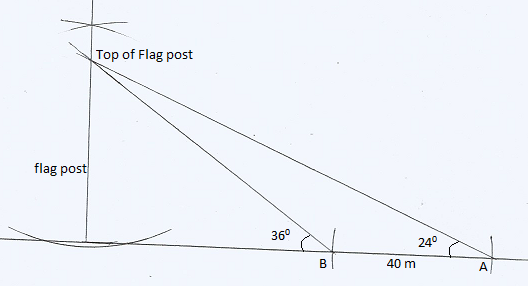
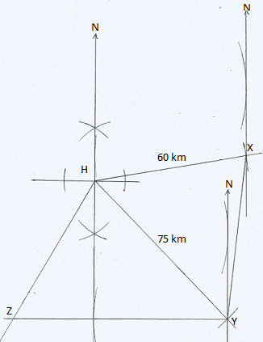

SECTION THREE
Answers to Problems to Solve
chapter 1
(a) 210
(b) 200
(a) \(19,171,311\)
(b) \(100,000\)
7
82
480
420
331
69
45
46
(a) 37,600,000
(b) 320,000
(c) 46.19
400,000
(b) 149,680
6.65
Grace (with 0.2)
(a) Ksh. 1,374
(b) Ksh. 50
(a) 904 cabbages
(b) Ksh. 13,560
(a) 46
(b) 374 rem 1036
(a) 1,226 cartons
(b) 2,452 Kg
(c) 11,034 Kg
(a) 2,250 Kg
(b) 180 Kg
Solution
\(No.\, of \,Passengers\, =23\)
At 1st stop: \(\Rightarrow\) 12 alighted
\(\Rightarrow\) 9 boarded
The amount of money collected in the first stop
\(\Rightarrow 12 \times 50=Ksh. 600\)
At 2nd stop:
6 of those in the 1st stop alighted (\(9-6=3 remained\))
Money collected: \(\Rightarrow 6\times (70-50)=Ksh. 120\)
In the final destination:
\(\Rightarrow\) 11 boarded from the beginning of the journey
\(\Rightarrow\) 3 boarded from the first stop
\(\Rightarrow\) 12 boarded from the second stop
(a) No.Passengers alighted at final destination:
\(\Rightarrow (11+3+12)=26\)
(b) Total passengers: \(\Rightarrow (23+9+12)=44\)
(c) Money collected in the trip: \(1st\, stop=Ksh. 600\)
\(2nd\, stop=Ksh. 120\)
Final destination: \(\Rightarrow 11\times 85=Ksh. 935\)
\(\Rightarrow 3\times (85-50)=Ksh. 105\)
\(\Rightarrow 12\times(85-70)=Ksh. 180\)
\(\therefore\) Money collected in the whole trip:
\(\Rightarrow\) \((600+120+935+105+180)=Ksh. 1,940\)
(a) (i) Tens
(ii)Tenth
(iii) Ones
(iv) Hundredth
(b) Thousands
chapter 2
(a) \(11\times 13^2\)
(b) \(3\times 5\times7\)
(c) \(2^2\times3^2\times 5^2\)
(d) \(2\times 5^2\times7\)
(e) \(7^2\times11^2\)
(f) \(2\times7^2\times11\)
(g) \(11^2\times17\)
(h) \(2\times3^2\times7\times11\)
(i) \(11^2\times13\)
(j) \(3\times331\)
- a) Yes
b) No
c) No
d) Yes
e) Yes
5172354 (iii)
a)
i) 2
ii) 1
iii) 7
iv) 3
b) i) 4
- 5
- a) Yes
b) Yes
c) No
90, 180, and 450
5 and 12
24
5:45 pm
a) 90
b) 24
21
12:30 pm
8:25 am
275
11
\(17.64 m^2\)
46 pieces
7
1764
1700 ml
\(0.16 m^2\)
n=1540
a) \(48=2^4\times3\)
b) \(60=2^2\times 3\times5\)
\(144\, m^2\)
-2
Ksh. 8,280
-2
\(\frac{19}{39}\)
\(4\frac{4}{19}\)
a) -3
b) -5
c) 0
Ksh. 200,000
Ksh. 240,000
Ksh. 22,500
ksh. 1,200
\(\frac{4}{51}\)
\(3\frac{4}{5}\)
\(4\)
\(400\%\)
\(2\)
\(\frac{3}{5}\)
\(\frac{2}{135}\)
a) 4
b) 2
Ksh. 18,750
420 students
a) Ksh. 48,000
b) Ksh. 12,000
c) Jane=Ksh. 4,000
Jepchonge=Ksh. 2,666.70
Chepkoech=Ksh. 1,333.30
\(0.2334\)
\(\frac{5}{8}\)
\(68.24\)
\(\frac{5}{9}\)
\(2\frac{1}{11}\)
\(5\frac{9}{11}\)
\(\frac{3}{50}\)
\(\frac{41}{110}\)
\(1827.3\)
\(0.6717\)
\(\frac{1567}{2475}\)
\(0.04666\)
\(0.001903\)
\(r=0.977 \,cm\)
\(T=0.3079\pi sec\)
\(4\)
\(3\)
\(3.4 \,m\)
Ksh. 400
\(\frac{1}{80}\)
Albina=48 years
Son=18 years
\(4\)
a) \(\frac{29}{4}x+48\)
b) \(512\)
Mother=64 years;
Jane=16 years
\(2(p-2q)(p+2q)\)
\(\frac{2}{3}\)
125 coins
Osinya= 96 years
Son=32 years
24 years
50 years
51 men
36 women
Awiti=32 years \Wafula=24 years\ Najala=12 years
32 years
Beans=150 bags; Peas=200 bags
a) 4
b) 3
\(4.36\%\)
(a) i) \((x+9)\) years
\((4x+18)\) years
7 years or 2 years
35 years or 30 years
46 years or 26 years
(a) i) \(\frac{480,000}{x}\)
- \(\frac{480,000}{x-4}\)
(b) 8 Women
(c) 2:3
(d) 0.75 ha
\(7:5\)
4 days
\(3:1\)
Ksh. 108
15 hours 9 minutes
5 days
40 m
108 mangoes
24 days
4 more days
60
18 women
\(2:1\)
\(2:3\)
a) \(8.16\%\)
b) \(12.49\%\)
\(11.11\%\)
\(3:7\)
Ksh. 690
5 days
21 days
\(3:2\)
27 men
13 hours 20 minutes
36 minutes
\(324 \,cm^3\)
\(39.26\%\)
a) 16 minutes 40 seconds or \(16\frac{2}{3}\) minutes
b) 15 minutes
\(480 cm^3\)
a) \(58,520\: cm^3/s\)
b) 6.2 m
c) 16 minutes 44 seconds
a) Fraction of work of potter C alone: \(\frac{9}{40}\)
Fraction of all potters working together: \(\frac{3}{5}\)
Fraction of work they did for 40 minutes: \(\frac{3}{5}\times \frac{4\cancel{0}}{6\cancel{0}}=\frac{2}{5}\)
Fraction of work undone: \(\frac{5}{5}-\frac{2}{5}=\frac{3}{5}\)
Fraction of work done by A and C in 20 min:
\(\Rightarrow \left(\frac{1}{a}+\frac{9}{40}\right)\frac{2\cancel{{0}}}{6\cancel{0}}=\left(\frac{1}{3a}+\frac{3}{40}\right)\)
Time taken by potter A to complete the remaining work: \(\frac{53}{30}\)
\(\therefore \left[\frac{3}{5}-\left(\frac{1}{3a}+\frac{3}{40}\right)\right]\div \frac{1}{a}=\frac{53}{30}\)
\(\Rightarrow \left(\frac{21}{40}-\frac{1}{3a}\right)\times a=\frac{53}{30}\)
\(\Rightarrow \frac{\cancel{40}}{\cancel{21}}\times \frac{\cancel{21}}{\cancel{40}}a=\frac{\cancel{21}}{1\cancel{0}}\times \frac{4\cancel{0}}{\cancel{21}}=4\)
\(\therefore A=4\: hours\, working \,alone.\)
b) \(\left(\frac{9}{40}+\frac{1}{4}+\frac{1}{b}\right)=\frac{3}{5}\)
\(\Rightarrow \frac{1}{b}=\left(\frac{3}{5}-\frac{19}{40}\right)=\frac{1}{8}\)
\(\therefore B=8 \:hour\,sworking \,alone.\)
c) \(\frac{9}{40}+\frac{1}{4}=\frac{19}{40}\)
\(\therefore\, A \,and\, C \,alone \,takes:2\frac{2}{19}\:hours\,or \,2hrs \,6\, min\)
a) Ksh. 19.50
b) i) Ksh. 84.20
- \(22.02\%\)
a) \(x=40 \,litres\)
b) \(50\%\)
c) \(1:2\)
a) \(P=84 \, litres\)
\(Q=112\, litres\)
\(R=224 \, litres\)
b) ksh. 142.30
c) \(44.1\%\)
a) i) 2,500 cows
3,100 cows
3,720 cows
b) i) \(24\%\)
- 48.8%
\(\left(\frac{180x}{p}\right)cm\)
\(\left(\frac{9p}{\pi}\right)cm\)
56.0 m
22 cm
22.2 litres
10 cm
a) \(61, 288 cm^3\)
b) 45.97 Kg
8.96 Kg
5040 litres
\(1,264 cm^2\)
\(QR=12\, cm\)
\(PQ=8 \,cm\)
\(PR=18 \,cm\)
a) i) 16.23 cm
- \(539.46 cm^2\)
b) 5.99 cm
c) \(450.86 cm^2\)
\(36.24\, cm\)
\(5 \,g/cm^3\)
\(1.5 \,m\)
\(945 \,Kg\)
\(7,529\,Kg/m^3\)
240 m
a) 29,508 \(cm^3\)
b) 28.03 Kg
c) 73.0 Kg
2:51 pm
2:05 pm
5:51 pm
5 times
\(60\, km/h\)
- \(x=3\)
\(y=-\frac{1}{3}\)
- \(x=-1\)
\(y=2\)
- \(x=0\)
\(y=2\)
Pen=Ksh. 15
Exercise book=Ksh. 20
Kiama=Ksh. 45,000
Plate=Ksh. 15
Spoon=Ksh. 9
Socks=Ksh. 220
Trouser=Ksh. 355
100 mangoes
a) \((9x+6)\) cows
b) 32 cows
Cup=Ksh. 60
Plate=Ksh. 36
Blade=Ksh. 6
Pen=Ksh. 30
a) Pencil=Ksh. 3
Blade=Ksh. 9
b) 16 Pencils
Ksh. 1,860
2,093 Japanese Yens
2,930 US dollars
1,046 Us dollars
17,030 South African Rands
Ksh. 345
Ksh. 370,354
a) \(24\%\)
b) Ksh. 2,880
\(56.25\%\)
\(38.89\%\)
Ksh. 680,000
Ksh. 41,310
a) Ksh. 300
b) Ksh. 200
Paying through his account in UK by Ksh. 5,131,971
a) Ksh. 3,148,535
b) 112,710 South African Rands
\(6.18\%\)
Ksh. 2500
Ksh. 840
Ksh. 16,200
Ksh. 17,000
\(8.5\%\)
a) Ksh. 4,500
b) Ksh. 100,500
c) Ksh. 18,736
d) Ksh. 1,642,105.30
a) 215 Kg
b) i) 45.3%
ii) 50%
a) Ksh. 4,455
b) Ksh. 1,400
c) Ksh. 7,700
(a) x=2; y=2
(b) Q(0,2.5); P(0,-4)
a) \(y=\frac{8+2x}{3}\)
\(y=5x-6\)
c) The two graphs are straight lines
d) x=2; y=4
5 sides
6 sides
12 sides
a) 6 sides
b) 108 cm
a) 12 sides
b) \(150^0\)
12 sides
5 sides
n=10; Decagon
n=9; Octagon
\(\theta=141^0\)
a)
b) \(Area=11.375 \pm0.325\,cm^2\)
a)
\(AC=7.3\pm 0.1\,cm\)
a)
c) \(PS=4.5\pm 0.1\,cm\)
\(Area=13.5 \pm0.3\,cm^2\)
e) \(RT=6.3 \pm 0.1\,cm\)
\(\angle TQR=38\pm1^0\)
a)
b) \(AB=4.4\pm0.1\,cm\)
d) \(AD=4.2 \pm0.1 \, cm\)
f) \(\angle ABC=56\pm1^0\)
a)
b) \(PQ=13.6\pm0.1 \,cm\)
\(\angle PQR=17\pm1^0\)
e) \(\angle QRT=132\pm 1^0\)
a)
b) \(AB=6.3 \pm 0.1\, cm\)
\(AC=5.2 \pm 0.1\,cm\)
d) \(Radius=4.1 \pm0.1 \,cm\)
a)
b) \(AC=4.4\pm 0.1\,cm\)
e) \(Radius=3.6\pm 0.1\,cm\)
375 ha
a)

b) \(Height=23\pm1\,m\)
c) \(31.5\pm1\,m\)
d) \(39\pm1\,m\)
\(PR=58\pm1\,m\); Compass bearing\(=S80\pm1^0W\)
a)
b) i) \(212\pm2\,Km\)
ii) \(228\pm2\,Km\)
iii) \(230\pm2\,Km\)
iv) \(S41\pm1^0W\)
a)
b) \(16.4\pm0.2\,km\); \(056\pm1^0\)
c) \(24.4\pm0.2 \,km\); \(S51\pm1^0W\)
a)
b) i) \(100\pm1\,Km\); \(50\pm1^0\)
ii) \(92\pm1\,Km\); \(256\pm1^0\)
iii) Compass bearing\(=N53\pm1^0W\)
a)
b) i) \(2625\pm15\,Km\)
ii) \(268\pm1^0\)
c) i) \(840\pm 15\,km\)
ii) \(266\pm1^0\)
a)
b) i) i) \(N34\pm1^0W\)
ii) \(S42\pm1^0W\)
c) i) \(600\pm10\,Km\)
ii) \(690\pm10\,Km\)
d) i) \(310\pm1^0\)
ii) \(269\pm1^0\)
a)
c) i) \(430\pm5\,m\); \(298\pm1^0\)
ii) \(S35\pm1^0E\)
a)

b) i) \(64\pm1\,Km\); \(186\pm1^0\)
ii) \(63\pm1\,Km\)
iii) \(112\pm1\,Km\); Compass bearing\(=S55\pm1^0W\)
a)
b) \(5hrs \,36\pm3\,min\)
c) \(171\pm1^0\)
e) \(287\pm1^0\)
a)
b) i) \(295\pm5Km\)
ii) Compass bearing of Y from W is \(S9\pm1^0W\)
c) \(170\pm5Km\)
a)
b) i) \(RP=138\pm1\,m\); Compass bearing of P from R is \(S58\pm1^0W\)
ii) \(RS=79\pm1\,m\)
iii) \(PS=118\pm1\,m\); \(093\pm1^0\)